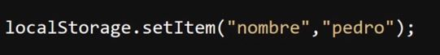
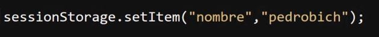
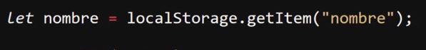
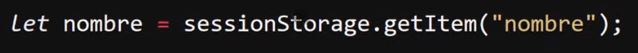
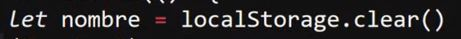
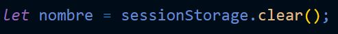
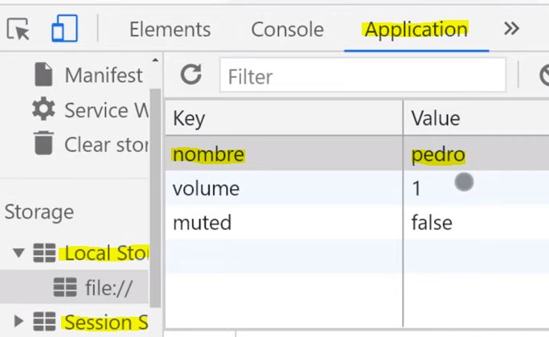

LocalStorage y SessionStorage
Ambas se tratan de "APIs" para el almacenamiento de datos en el navegador; la diferencia entre ellas radica en que "localStorage" es un almacenamiento permanente. Sin importar si se actualiza la página o se cierra el navegador, esos datos permanecerán guardados en "localStorage". Por otra parte, "sessionStorage" se trata de un almacenamiento volátil, es decir, que al actualizar la pestaña o cerrar el navegador la información se pierde.
Ambas "APIs" funcionan básicamente igual; de hecho, poseen los mismos métodos para manipular los datos:
-
Para guardar un dato en estas "APIs" se usa el método ".setItem()". Para ingresar datos se requiere un nombre de "key" y el dato a almacenar. La "key" funciona como un identificador para el dato; en otras palabras, el almacenaje en "storage" requiere cadenas nombre/valor:
LocalStorage

SessionStorage

-
Para obtener un dato desde "localStorage" o "sessionStorage" se usa el método ".getItem()". Este método únicamente requiere que se le especifique el nombre de la "key" para poder seleccionar el dato indicado:
LocalStorage

SessionStorage

-
Para eliminar un dato de estas "API" se usa la función "removeItem()". Del mismo modo que "getItem()", esta función solo requiere el nombre de la key que identifica el dato para ubicarlo, con la diferencia de que no lo obtiene, sino que lo elimina.
LocalStorage
Nota: En el caso de "localStorage", el dato no se eliminará hasta que se le indique.
SessionStorage
Nota: En el caso de "sessionStorage", el dato se eliminará si se recarga la página o si se cierra el navegador.
-
Para eliminar todos los datos almacenados en estas "API" se usa el método "clear()". Este método no requiere de ningún parámetro, simplemente elimina todos los datos guardados en "localStorage" y en "sessionStorage".
LocalStorage

SessionStorage

Nota: Se puede observar el contenido de cualquiera de estas APIs ya sea aplicando un "console.log" a los objetos "sessionStorage" o "localStorage", así como también ingresando a las herramientas de desarrollador de Google, a la sección de "Aplicación (Application)" y en el segmento llamado "Almacenamiento (Storage)".

Este se trata de un manejo muy básico del "localStorage" y del "sessionStorage". Los métodos y propiedades de estas van mucho más allá; para profundizar se puede ingresar en el apartado del LocalStorage y del SessionStorage de "Developer Mozilla".